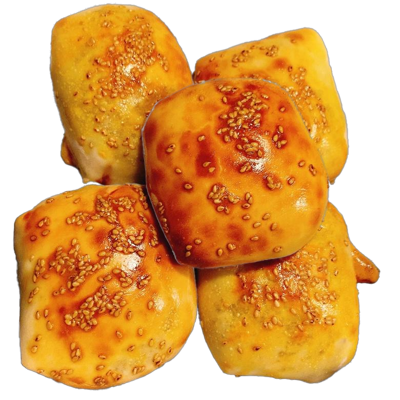

Food Example Images


Bun Line
Xinjiang Baked Bun Production Line
High automation production line that reduces labor intensity and improves production efficiency. Designed for stable output and consistent shaping of baked bun products.
Workflow
Automatic forming + conveying
Stability
Consistent shape/output
Integration
Baking / cooling / packing
Customization
Layout & product spec
Technical Parameters
| Supported Products | Xinjiang baked bun and similar baked bun products |
|---|---|
| Core Modules | Dividing, forming/shaping, conveying, baking integration |
| Automation | PLC control; sensor monitoring; safety interlocks and alarms |
| Quality Consistency | Stable portioning and forming (by configuration) |
| Integration | Cooling racks, stacking, packaging (optional) |
| Customization | Product size/shape, line layout, capacity target |
Process Flow
- Dough preparation
- Dough dividing / portioning
- Forming/shaping
- Discharge to baking line
- Baking
- Cooling
- Stacking / packaging (optional)
Options & Customization
- Different size/weight ranges and shaping molds
- Layout design based on factory space and utilities
- Integration with cooling, counting and packaging
- Automation upgrades for stacking/boxing
Request a Quotation
Please provide your bun size/weight range, expected capacity and workshop layout. We will propose the best line configuration.
Contact JIN KE MACHINERY